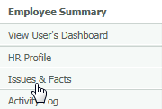
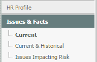
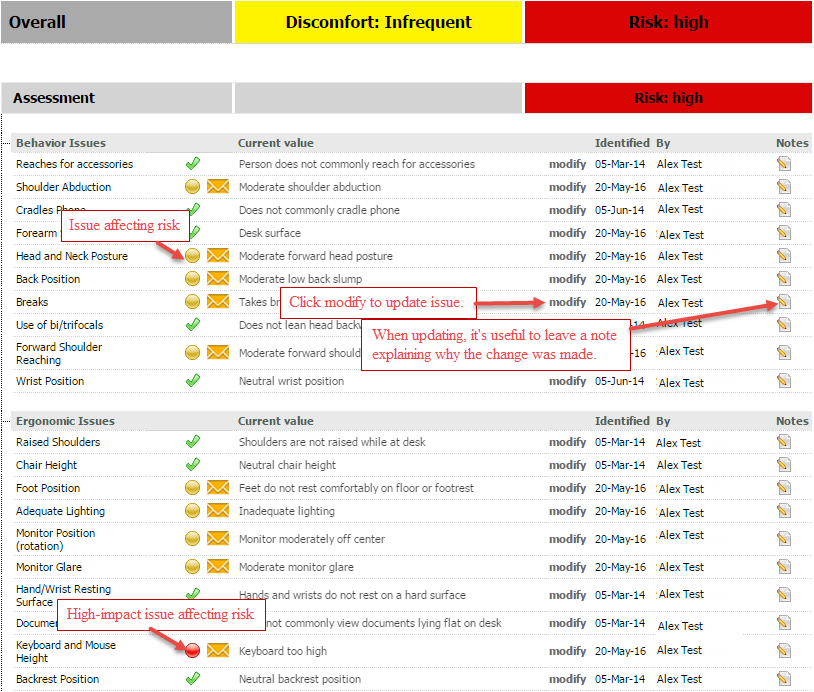
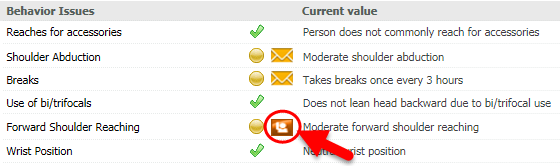

The Issues & Facts section of the Employee Summary shows all of the ergonomic and behavioral issues and facts that have put the user in a particular risk category. This section is particularly useful for ergonomists or physical therapists as they can get an overview of a user's self-identified issues prior to a desk visit.
For more information on risk levels, see Risk Levels.
To view the Issues & Facts for a user:
From Employee Summary, select Issues & Facts from the left menu.

You can filter the list for only Current or both Current & Historical items, or for Issues Impacting Risk.
To view only the issues affecting the user's risk level:
Select Issues Impacting Risk.

Note: Any changes made will be date-stamped and the name of the person making the changes will be recorded. You may add a note to provide additional details if necessary.

You can :
Add a note to an issue by clicking the Notes icon in the right column. A number in parentheses indicates existing notes.
Notes will also appear in the Notes Log.
Yellow circle indicates an issue affecting risk.
Red circle indicates a high-impact issue affecting risk
A closed envelope means the user has not yet reviewed that issue/fact in their "To-Do List"
An open envelope means the user has reviewed that issue/fact in his her "To-Do List"
For an issue to be marked as reviewed (open envelope), the user must have opened the issue from the To-Do List and have selected one of the following:
A green check mark means the issue does not impact risk.
A raised hand means the user has selected "I am unable to resolve this issue"
If a user has marked an issue as "unresolvable" you may move that issue back to the To-Do List or mark the issue as resolved once you have assisted the user with the issue.
To resolve an issue or move an unresolvable issue back to a user's To-Do List:
Click on the "hand raised" icon within the user's Issues & Facts.

The following choices are presented: